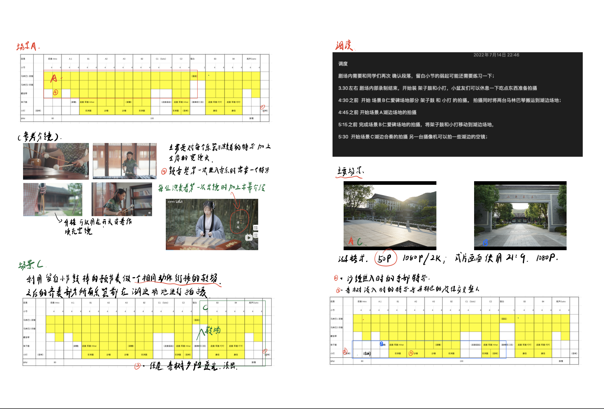
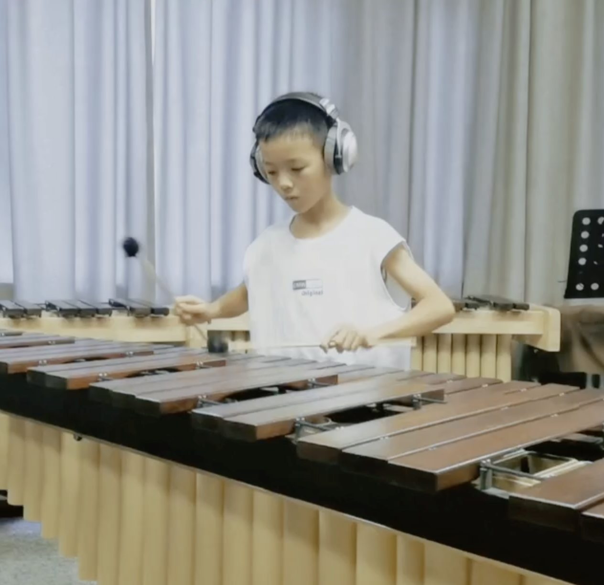
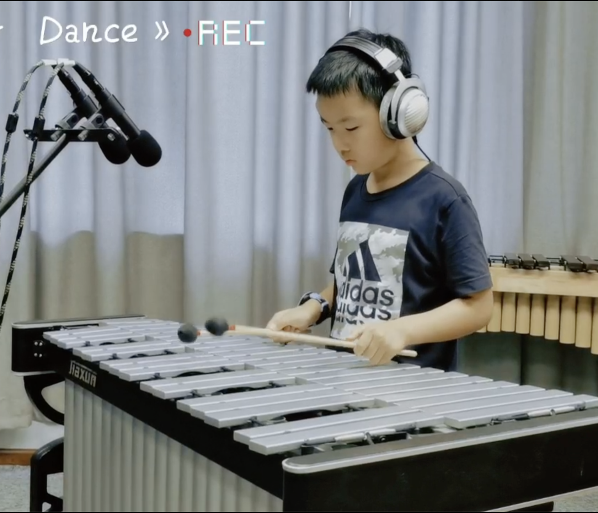
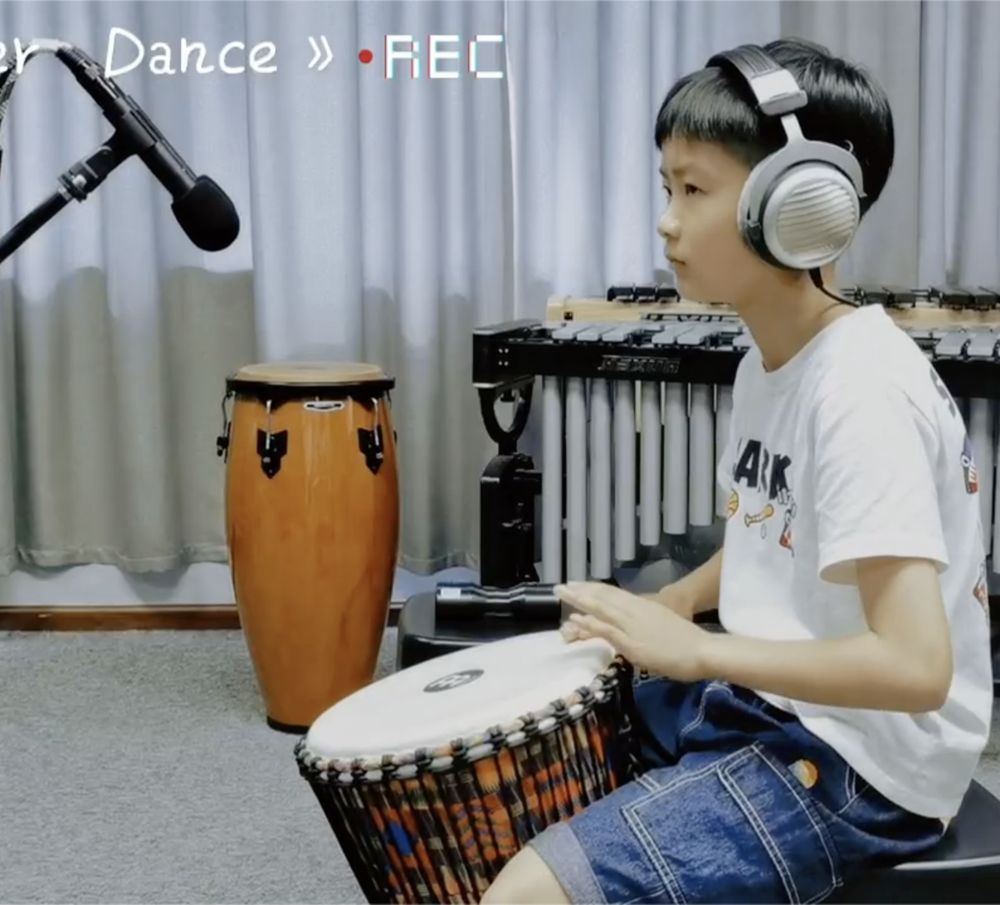

花之舞，舟山育华青少年打击乐团
这是我在2022年的暑假为舟山育华小学的小朋友们拍摄的一个演奏视频。从拍摄剪辑到乐器混录基本上是由我自己一个人完成，也似乎是我在演奏视频这一方面经历过最大的项目吧。
这个视频拍摄的过程或许是我第一次当做导演这个角色的经历。虽然称不上一个完整的剧组，但是演员、道具、场地等等这些要素是客观存在的，意味着调度问题上需要考虑效率上的最优解。 虽然没有学习过编导的专业知识，凭借对于可能遇见情况的分析并写下一个粗略的脚本，还是足以应对这样体量的一个小剧组。↓




↑ 相比起来，录音部分的工作更贴近我在北音进修的专业，和小朋友们合作的也会让原本枯燥的录音任务更加有意思一些。在这个过程中我需要做的只是引导小朋友们的演奏。
最后的音频后期的过程实际上，从混音的角度看，是并不复杂的一个工程。当时如果把他和视频剪辑放在同一个工作流中整体看待，我发现在制作过程中又有点像是配乐的思维。 或许MV类型的视频也算是一种小体量的影视，也是一种非常多元的艺术形式。从统筹的角度看，画面部门的拍摄，剪辑，调色和声音部门的录音，作曲，混音等等工作之间的的关联性保持一致才能达到最好的效果。